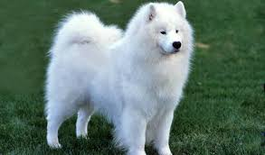
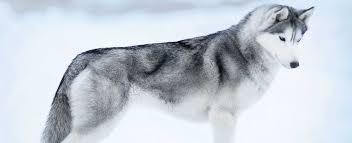
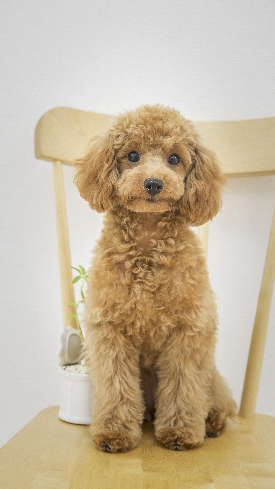
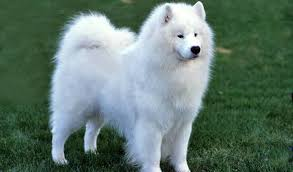
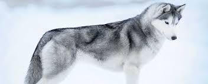
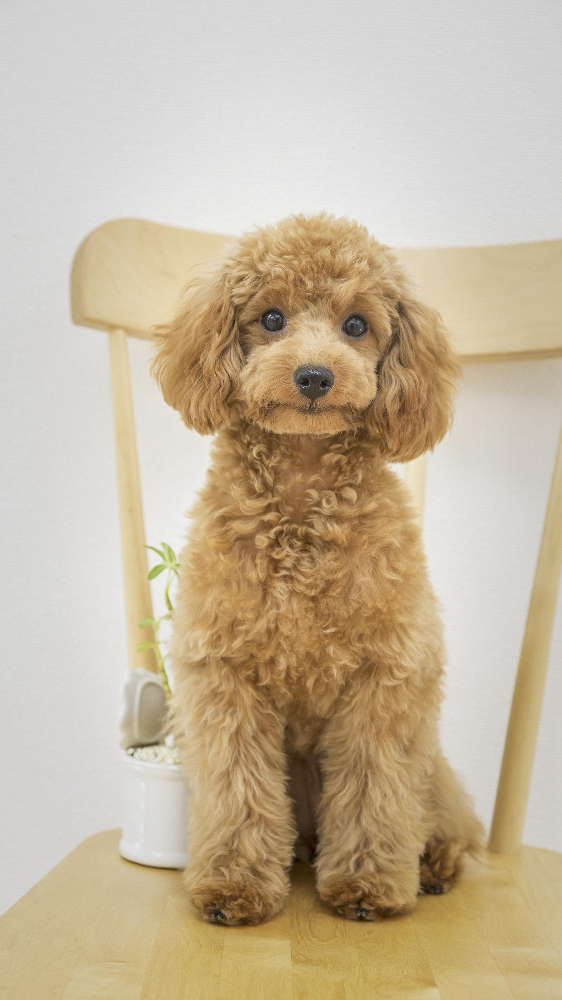

This website is about dogs. You will learn about my favorite types of dogs
- Dogs are super facinating
- You will find out a lot about their behavior
- You can learn that their intellegent and love and care toward its master
- You will find a lot of cute pictures of dogs


 







| Dog names: |
| Golden Retreiver, the Golden Retriever is a medium sized dog that has been one of the most popular dogs in the United States for years. They were originally developed to be gun dogs for the hunting of ducks and game birds. They love the water and are fantastic family pets. |
| Labrador Retreiver, the Labrador Retriever is a lively and fun-loving breed that makes a wonderful family pet. If you ask most people what colors Labs come in they will say yellow, black, and chocolate. |
| Pug |
| Shiba Inu |
| Husky |
| Poodle |
| German Shepherd |
| Chow Chow |
| Border Collie |